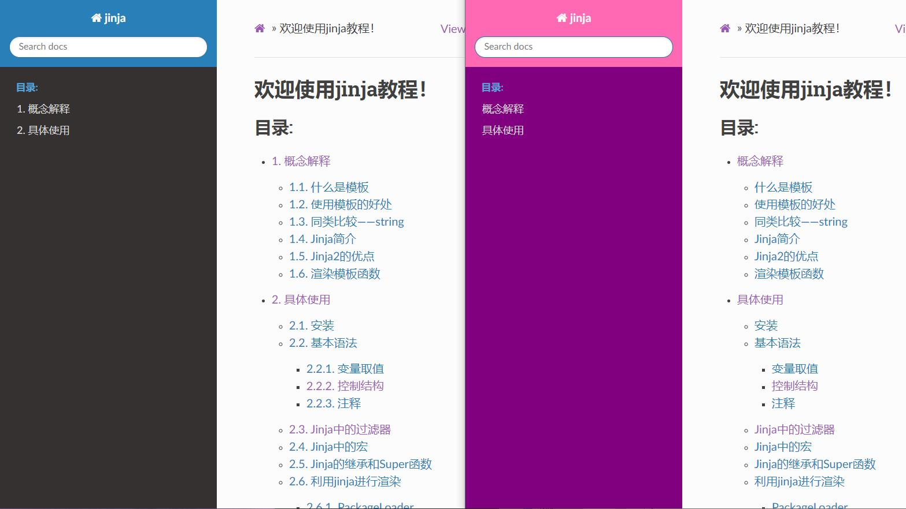
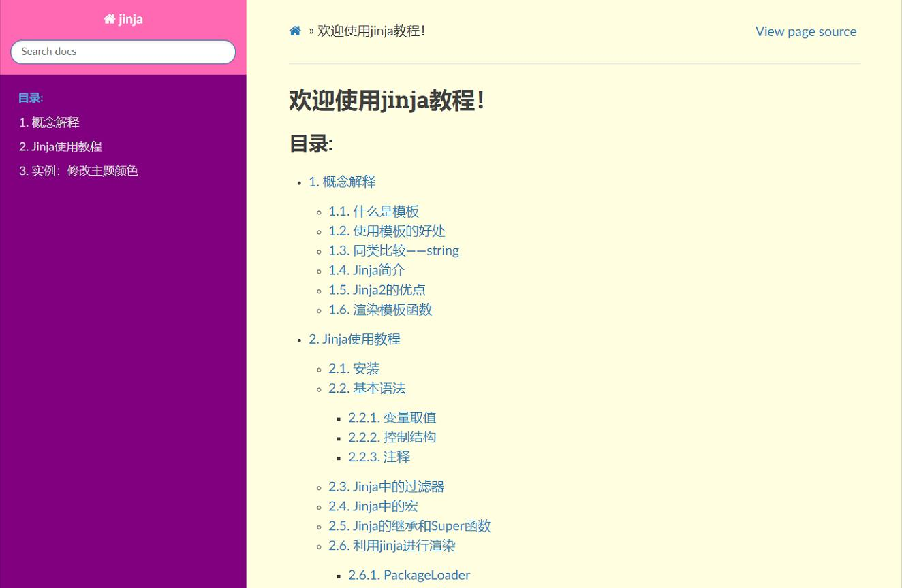
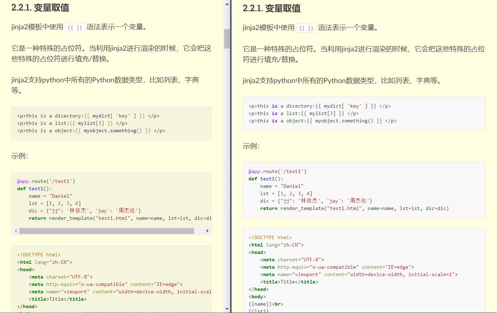

3. 实例：修改主题颜色¶
通过jinja我们可以对网页内容进行修改。
选定主题发布网页以后，我们可以点开网页，在任意处点击右键选择 “检查” 。点击需要修改的内容，并查找其标签。
3.2. 通过layout.html修改¶
我们可以通过在source下面的_templates文件夹下面新建layout.html文件，输入以下代码，继承原主题，并修改其颜色为“hotpink”。
{% extends "!layout.html" %}
{% block footer %} {{ super() }}
<style>
/* Sidebar header */
.wy-side-nav-search {
background: hotpink;
}
</style>
此时，confg.py文件中需要设置：
templates_path = ['_templates']
3.3. 通过css修改¶
除了只添加layout.html文件，还可以通过链接到css文件对网页进行修改。
其原理就是将原来layout.html文件中的style部分单独提取出来，变为css文件。
因此，原layout.html文件需改成：
{% extends "!layout.html" %}
{% block footer %} {{ super() }}
<link rel="stylesheet" type="text/css"
href="./_static/custom.css">
{% endblock %}
在source下面的_static文件夹下面新建custom.css文件，输入以下代码即可：
.wy-side-nav-search {
background: hotpink;
}
此时，confg.py文件中需要设置：
templates_path = ['_templates']
html_static_path = ['_static']
3.4. 效果图¶
通过以上步骤，我们同理可以修改其他更多的元素，实现主题定制。
如修改导航栏背景颜色：

如修改正文背景颜色：

如修改代码块背景颜色：

layout.html文件中的代码如下：
{% extends "!layout.html" %}
{% block footer %} {{ super() }}
<style>
/* Sidebar header (and topbar for mobile) */
.wy-side-nav-search, .wy-nav-top {
background: hotpink;
}
/* Sidebar */
.wy-nav-side {
background: purple;
}
.wy-nav-content, .wy-nav-content-wrap
{
background: lightyellow;
}
.highlight{
background-color: beige;
}
</style>
{% endblock %}